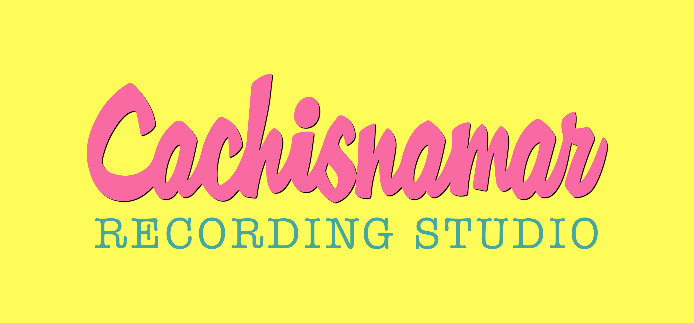
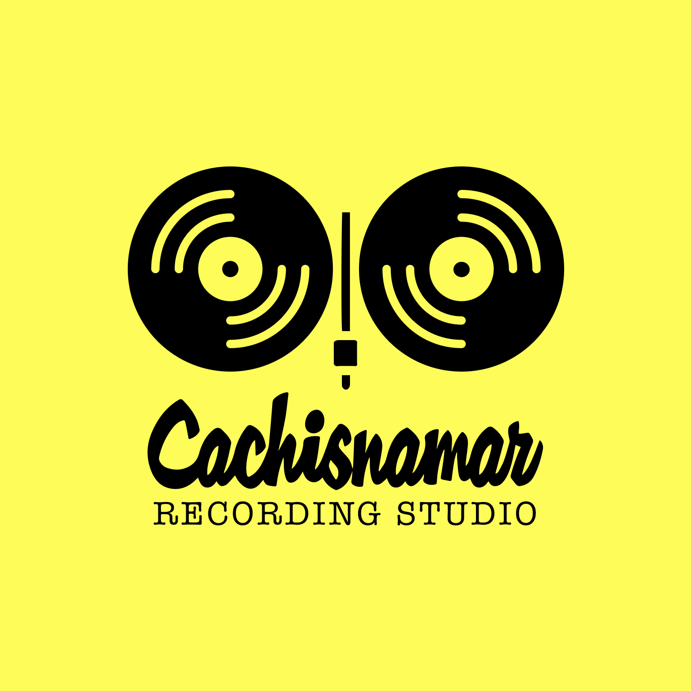
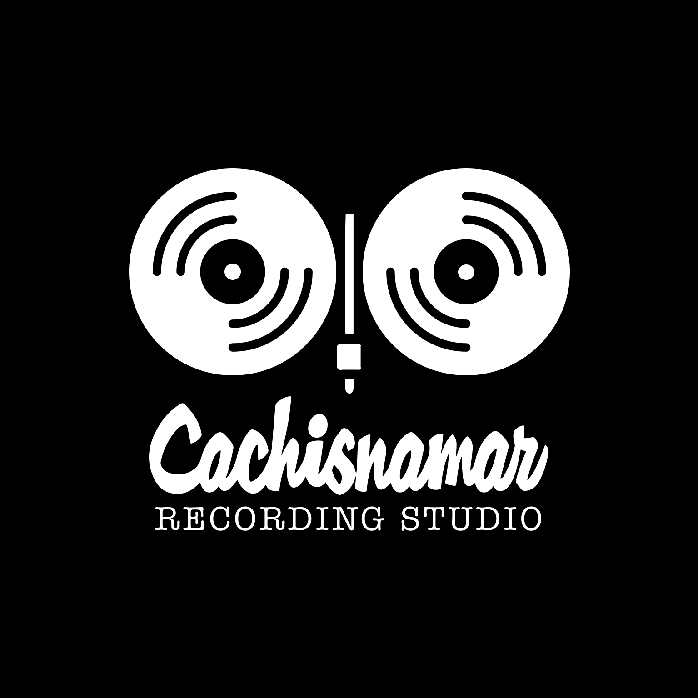
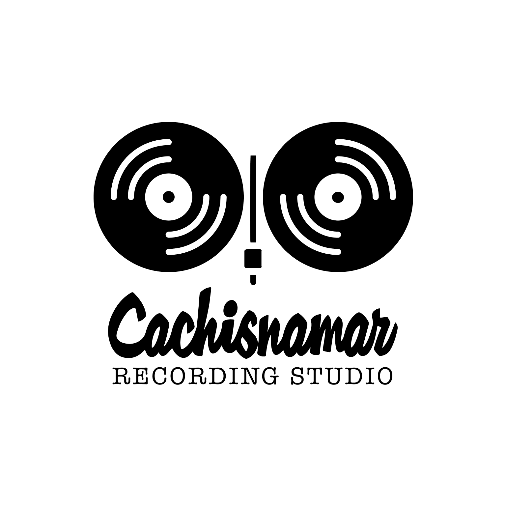
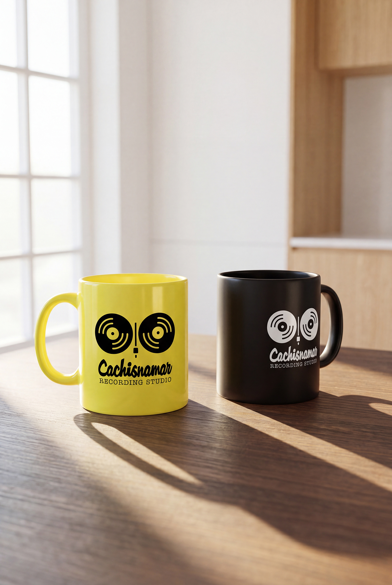
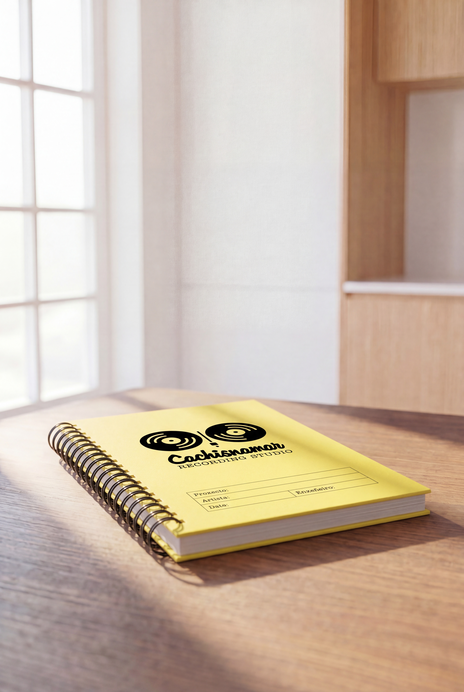

Cachisnamar
Recording Studio
Identidade visual para o proxecto persoal do produtor musical Iago Bouzón.

O que comezou como unha colaboración para a produción dunha maqueta acabou converténdose no desenvolvemento da identidade visual de Cachisnamar Recording Studio, o estudo persoal de Iago Bouzón.
O obxectivo era crear unha marca próxima e recoñecible, afastada da estética técnica habitual dos estudos de gravación e capaz de transmitir personalidade desde o primeiro momento.

A identidade parte dunha idea sinxela: dous discos de vinilo e un brazo dun tocadiscos forman un rostro. Este recurso transforma elementos propios do universo musical nun símbolo facilmente recoñecible, achegándolle un carácter desenfadado sen perder a súa relación directa coa gravación e a produción musical.
A identidade apóiase nunha paleta moi limitada —amarelo, negro e branco— e nunha combinación tipográfica que achega contraste entre expresividade e funcionalidade. O resultado é un sistema visual sinxelo, doadamente reproducible e adaptable a soportes físicos e dixitais.



